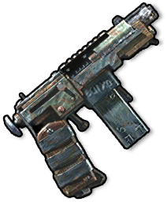

Armes
Objets · ArmesPistolet artisanal
Handmade Pistol

Handmade Pistol / ArmesPuissance d’attaque25.0
Recette de fabrication
Recette de fabricationChaque fabrication produit 1 objets. Les matériaux ci-dessous correspondent à une fabrication.


Comment l’obtenir
Comment l’obtenirButinS’obtient dans le butin
Produits du recyclage
Produits du recyclageDescription de l’objet
Arme artisanale dangereuse faite de débris. Bon marché et rudimentaire.